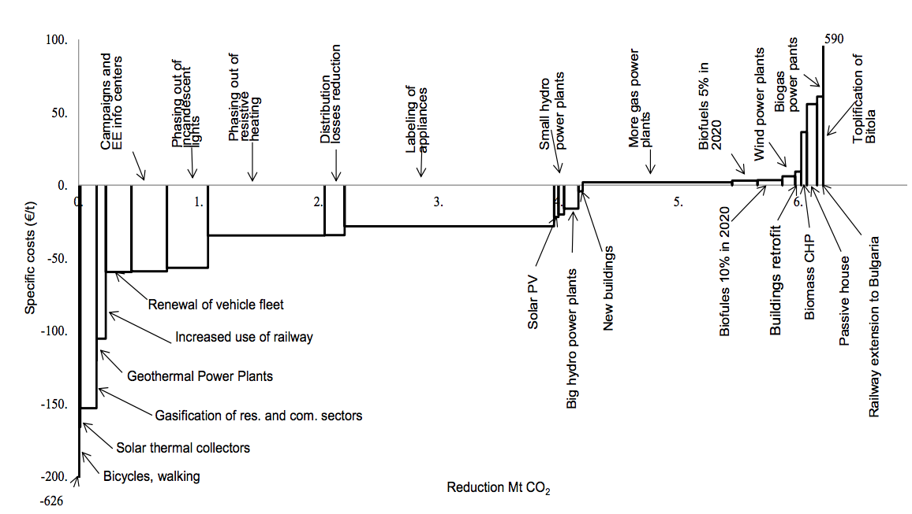
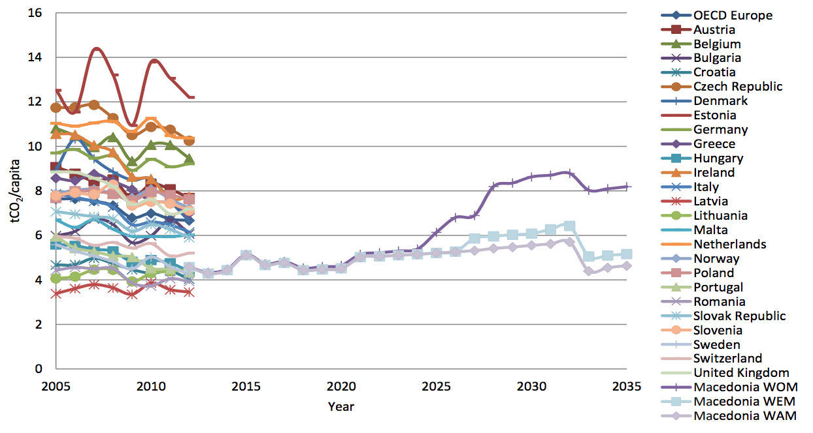

CO2 emissions projections
Skopje, 4 August 2015
The Republic of Macedonia, as a party of the UN Framework Convention on Climate Change (UNFCCC), is fully committed to the negotiating process aimed at reaching a global agreement applicable to all Parties at the Paris Conference in December 2015. According to this Agreement, all Parties should be able to give their contribution on a fair and equitable basis and in line with their national circumstances, towards achieving the global objective of stabilizing greenhouse gas (GHG) concentrations in the atmosphere at a level which would prevent an increase in the global temperature of more than 2°С.
The Republic of Macedonia is a non-Annex I country to the UNFCCC (developing country) without quantified commitments for reducing the GHG emissions. At the same time, it has a status of a candidate country for European Union (EU) membership, having thus to adhere to the EU Climate and Energy Policy, which actually takes in commitments of the Annex I countries. The Republic of Macedonia, on voluntary basis endeavors to integrate as much as possible both aspects (UNFCCC and EU) in its national reports on climate change.
The Conference of Parties in Lima confirmed the Warsaw decision that all Parties should prepare their INDC in a manner that would ensure clarity, transparency and understanding of the INDC.
The Republic of Macedonia, in agreement with the Decision No. 42-17/91 of the 91st Session of the Government held on 28 July 2015, intends to give the following contribution to the global efforts for GHG emissions reduction (Macedonian INDC):
To reduce the CO2 emissions from fossil fuels combustion for 30%, that is, for 36% at a higher level of ambition, by 2030 compared to the business as usual (BAU) scenario. The CO2 emissions from fossil fuels combustion cover almost 80% of the total GHG emissions in the country with a dominant share of the following sectors: energy supply, buildings and transport.
In line with the Lima Call for Climate Action, in particular paragraph 14, the Republic of Macedonia shall submit the following information for its INDC, presented in detail in a Background Document, which is an integral part of this submission (uploaded on http://www.klimatskipromeni.mk/Default.aspx?LCID=302, www.moepp.gov.mk).
Climate Change Mitigation
Due to the extensive use of fossil fuels, particularly the dominant share of domestic lignite for electricity production, there is a significant potential in the country for GHG emissions reduction. Having this in mind, the focus of the Macedonian INDC is put on climate change mitigation, that is, on policies and measures which lead to GHG emissions reduction. However, this does not suggest that adaptation is less important. Vulnerable sectors and climate change adaptation shall be subject to a more detailed analysis in the future, from the point of view of INDC needs.
GHG emissions reduction and climate change mitigation policies and measures (projects)
GHG emission reduction expressed as a baseline scenario target
CO2, 80% of the total emissions (all emissions originating from fossil fuels combustion)
According to the GHG Inventory, almost 80% of the total GHG emissions are CO2 emissions, originating from fossil fuels combustion, with dominant share of the sectors energy supply, buildings and transport.
Energy supply, buildings and transport
Emissions from agriculture, forestry and other land uses, as well as in industrial processes and waste have not been analyzed since they have a relatively small share in total GHG emissions.
Baseline scenario target:
To reduce the CO2 emissions from fossil fuels combustion for 30%, that is, for 36% at a higher level of ambition, by 2030 compared to the business as usual (BAU) scenario.
Modeling and scenario development:
GHG Inventory:
Global Warming Potential, GWP:
Evalutation of economic and environmental aspects of mitigation:
Evaluation of social aspects of mitigation via green jobs:
Macroeconomic drivers:
Use of domestic resources:
Energy supply technologies:
Energy Imports:
Demand side:
Mitigation policies and measures
Energy supply
Buildings
Transport
Additional mitigation policies and measures:
Energy supply
Buildings
Transport
CO2 emissions projections
According to the BAU scenario (WOM), CO2 emissions by 2030 will almost double (from about 9 000 kt they will increase to about 18 000 kt). With the 17 measures included in the mitigation scenario (WЕМ), in 2030 a reduction of 30% compared to the BAU scenario can be achieved. Further on, with the higher ambition mitigation scenario (WАМ), which includes improved and additional measures, the CO2 emission reduction compared to the BAU scenario in 2030 shall be 36%. In all scenarios the CO2 emissions shell have a growing trend, peaking between 2030 and 2032. In 2030, the CO2 emissions shall increase for 31% under WEM scenario, that is, for 20% under WAM scenario, compared to the CO2 emissions in 1990.
| BAU scenario (WOM) | Mitigation scenario (WEM) | Higher ambition mitigation scenario (WAM) | |
|---|---|---|---|
| CO2 emissions in 2030 (kt) | 17 663 | 12 435 | 11 359 |
| Deviation from the BAU scenario in 2030 | -30% | -36% | |
| CO2 emissions in 1990 (kt) | 9 445 [2] | ||
| CO2 emissions in 2030 compared to the CO2 emissions in 1990 | +87% | +31% | +20% |
In the period 2015-2030, the additional investments (relative to BAU scenario) needed for realization of the mitigation scenario are estimated at 4.2 billion Euros, while for realization of the higher ambition mitigation scenario they are estimated at 4.5 billion Euros.
Besides on national investments, the implementation of the national mitigation policies and measures shall also depend on the involvement of the private sector (national and international) and on the access to new sources of finance and enhanced international support to be mobilized through new climate finance mechanisms, such as the Green Climate Fund.
The Republic of Macedonia is following the negotiations within the UNFCCC’s Subsidiary Body for Scientific and Technological Advice (SBSTA) on a framework for establishing a New Market Mechanism - NMM as well as for establishing non-market approaches - NMA. Once the definition of these concepts is agreed, the Republic of Macedonia shall consider potential linkage to its national mitigation actions.

Marginal abatement cost curve (2030)
By implementing policies and measures that have negative costs, by 2030, СО2 emissions may be reduced for more than 4 Мt compared to the BAU scenario. Additionally, with relatively small investments, СО2 emissions may be reduced for additional 2 Мt.

Domestic green jobs
By implementing energy efficiency measures in buildings and by introducing low-carbon energy supply technologies (renewables and gas) about 6000 green jobs can be created by 2030.
The process for determining the Macedonian INDC was led by the Ministry of Environment and Physical Planning (MOEPP), as the national institution responsible for climate change policies and national contact point for UNFCCC. The National Climate Change Committee (NCCC) and the Technical Working Group at the National Sustainable Development Council were also part of this process, as well as other key stakeholders – the Ministry of Economy and the Ministry of Transport and Communication as institutions which are responsible for policies in the target sectors, representatives of the business community, civil society organizations and the academic community. Also, the international institutions and donors in the country had important role, primarily the United Nations Development Programme (UNDP) and the Deutsche Gesellschaft für Internationale Zusammenarbeit GmbH (GIZ) which provided technical and financial support for this process. The analysis and the technical component of the process were carried out by an expert team which included the team of the Research Center for Energy and Sustainable Development of the Macedonian Academy of Sciences and Arts, one national expert and one international expert.
On a strategic level, through the key challenge of the National Sustainable Development Strategy titled “Climate Change and Clean Energy”, it is required to integrate climate change mitigation into the energy planning. Further on, in the Energy Strategy, in the chapter analyzing the energy sector in Macedonia in the light of sustainable development, the strong connection between energy sector and climate change has been recognized. Further coordination with the Ministry of Environment and Physical Planning, as the institution responsible for climate change, is required, as well as appropriate harmonization of the strategic and legislative solutions in the energy field with the strategic and legislative solutions for climate action. In order to identify specific mitigation policies and measures, the following documents have been taken into consideration:
Roles of the stakeholders:
Consultations took place at technical meetings (with senior representatives of line ministries and appointed contact persons) and at topical workshops with all stakeholders. Workshops were held on the following topics:

Emissions kg CO2/2005 USD[3]
CO2 emissions per GDP of the Republic of Macedonia are similar to the figures of Bulgaria and Estonia. In the BAU scenario, this indicator shall be reduced from 1.4 kg CO2/2005 USD to 1.1 kg CO2/2005 USD, while in the mitigation scenarios the values in 2030 shall be reduced to 0.76 kg CO2/2005 USD, and to 0.7 kg CO2/2005 USD, respectively, which actually marks the gradual transition to low-carbon economy. This reduction trend is similar to the trend present in Poland and Romania. According to this indicator, the Republic of Macedonia, in 2035 shall reach the 2012 level of Lithuania, Hungary, Slovenia and other countries in this group with values of around 0.4 kg CO2/2005 USD.
2/capita">
Emissions t CO2/capita [4]
The Republic of Macedonia is in the same group with the European countries with lower CO2 emissions per capita – Lithuania, Portugal, Sweden and Hungary. In the BAU scenario there is a growing trend while in the mitigation scenarios, this indicator in 2035 would be at the same level as in 2012.
This Submission is the first step in the process of determining national contributions and the Republic of Macedonia reserves the right to review and to conduct more detailed analysis, provided the assumptions under which these this INDC has been developed change as a result of the future global agreements and relevant decisions of COP, gas supply and other geo-political developments, as well as the point in time when the Republic of Macedonia will become an EU member country.
The Republic of Macedonia requests that this submission is published on the UNFCCC webpage and its contribution is included in the synthesis report prepared by the Secretariat on the cumulative effect of the contributions of all Parties.
Hungarian Power Exchange – HUPX, https://www.hupx.hu/en/Pages/hupx.aspx?remsession=1 ↩
GHG Inventory, First Biennial Update Report on Climate Change (FBUR), 2014 ↩
Source for European countries: OECD data base and MARKAL model projections ↩
Ibid ↩